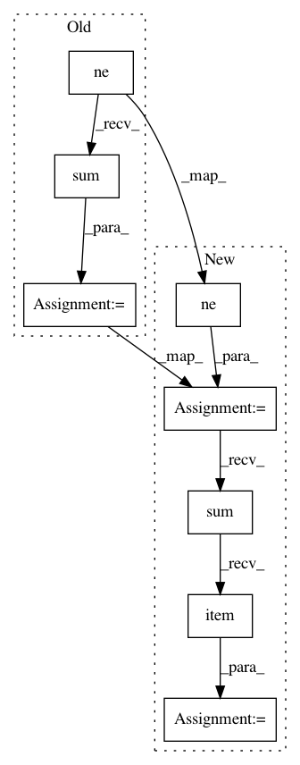

718677ebb044e27aaf1a30640c2f7ab6b8fa8509,fairseq/criterions/masked_lm.py,MaskedLmLoss,forward,#MaskedLmLoss#Any#Any#Any#,25
Before Change
ignore_index=self.padding_idx,
)
sample_size = targets.ne(self.padding_idx).int().sum().item()
logging_output = {
"loss": utils.item(loss.data) if reduce else loss.data,
"nll_loss": utils.item(loss.data) if reduce else loss.data,
After Change
3) logging outputs to display while training
// compute MLM loss
masked_tokens = sample["target"].ne(self.padding_idx)
logits = model(**sample["net_input"], masked_tokens=masked_tokens)[0]
targets = model.get_targets(sample, [logits])
targets = targets[masked_tokens]
loss = F.nll_loss(
F.log_softmax(
logits.view(-1, logits.size(-1)),
dim=-1,
dtype=torch.float32,
),
targets.view(-1),
reduction="sum",
ignore_index=self.padding_idx,
)
sample_size = masked_tokens.int().sum().item()
logging_output = {
"loss": utils.item(loss.data) if reduce else loss.data,
"nll_loss": utils.item(loss.data) if reduce else loss.data,
In pattern: SUPERPATTERN
Frequency: 3
Non-data size: 8
Instances
Project Name: pytorch/fairseq
Commit Name: 718677ebb044e27aaf1a30640c2f7ab6b8fa8509
Time: 2019-09-18
Author: namangoyal@learnfair0893.h2.fair
File Name: fairseq/criterions/masked_lm.py
Class Name: MaskedLmLoss
Method Name: forward
Project Name: jadore801120/attention-is-all-you-need-pytorch
Commit Name: 24357bb63d8338158ddb7fefaf35ca4bd7064f31
Time: 2018-08-22
Author: yhhuang@nlg.csie.ntu.edu.tw
File Name: train.py
Class Name:
Method Name: get_performance